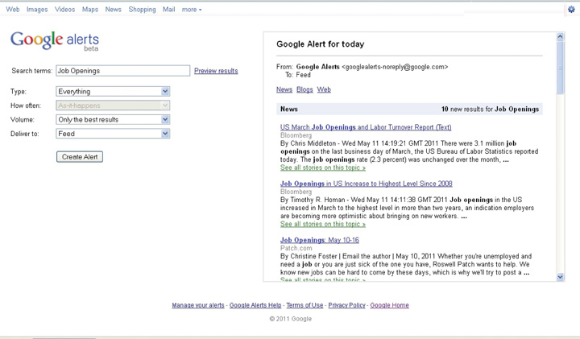

Figure 6.1 The Six-Step Job Search Process: Step 3
What Do We Mean by Conduct In-Depth Research?
At this point in your search, you have done the following two steps:
This chapter covers what you are looking for when you research.
You might be tempted to take your marketing campaign public—broadly distributing your résumé, posting it on job boards, and sharing it with everyone you know. You definitely need to put yourself out there via networking and interviewing in order to get a job. However, networking and interviewing is step 4. Before you go out on the market in front of people as a legitimate job contender, you need to complete step 3, conduct in-depth research.
Every time you put yourself in front of someone, it is a potential job interview situation. You don’t know whom people know or if they may know of a job opening. So you want to make the best impression whenever you speak to anyone. If you use face-to-face interaction for your research, you risk coming across as a novice to someone who can really help you. On the other hand, if you take time to do some secondary researchResearch from printed or published sources. This is different from primary research where you are actually speaking with people firsthand or collecting the data yourself. beforehand, you demonstrate knowledge of the job, organization, or industry, and you can use the personal interaction to research above and beyond what you can find in published material. Therefore, research must precede networking of any kind.
Research is often undervalued in the job search. Recruiters often complain that candidates come into interviews with little knowledge of the position, organization, and industry for which they are interviewing. Are you guilty of too little research?
According to Holly White, HR manager for United Nations Children’s Fund (UNICEF), “I am impressed by a candidate that intimately knows the organization, the current focus/strategy and is able to engage the interview panel in a thoughtful discussion about issues and opportunities.”Author interviewed Holly White directly for a post she did on her website: http://www.sixfigurestart.com/recruiter-interview/recruiter-interview-holly-white-unicef
Table 6.1 Things to Know about Your Target Job, Organization, and Industry
| Job | Organization | Industry |
|---|---|---|
|
|
|
This chapter includes how to conduct in-depth research. Yes, it includes reviewing the job description and organization website. Yes, interviews are a source of information. But as you can see from Table 6.1 "Things to Know about Your Target Job, Organization, and Industry", you need more information than is likely to be found in just the posting and the website. There are many other additional resources to consult:
This chapter details why in-depth research is critical to your job search:
Finally, this chapter talks about informational interviewsA meeting set up with the purpose of gathering information or exploring a topic.. Informational interviews are meetings where you are the interviewer, and the person with whom you are meeting has information that you want—for example, about a specific job, organization, or industry. Informational interviews are a type of networking, but since the primary aim is to uncover information, we are including informational interviewing in the research chapter.
Informational interviews are a bridge between steps 3 and 4 because they enable you to test your research from step 3 before you more broadly go out into the market as a job seeker in Step 4, Networking and Interviewing. Many job seekers treat informational interviews like an interrogation, with a long list of questions to extract information from the interviewee. In this chapter, we take a more sophisticated approach to informational interviews. These interviews occur after some research is already completed, so the interview is not simply a series of questions to gain more information but rather a way to verify, refine, and test the information already researched. It is a two-way conversation, and you will be giving as well as receiving information.
| Job |
|---|
|
Information about the job tells you what you will do in the immediate term. Ideally, you have a clear understanding of what you are responsible for—in what areas you can make decisions and which people, resources, or budget you need to manage. You want to have a picture of what a typical day, week, and month look like, in terms of your activities and how you spend your time.
Having a clear sense of your responsibilities and day-to-day activities enables you to see if this aligns with what you want to be doing. This helps to confirm that your targets from step 1 are correct. Information about the job also helps refine your marketing from step 2. Your cover letter can highlight how your past experience matches what this job requires, now that you know more about it.
The reporting structureWho reports into whom. For example, if an organization has two people—the owner and the assistant—the reporting structure would be that the assistant reports into the owner. As organizations get bigger, the reporting structure gets more complicated. of the job is also important because your boss, or the person to whom you will be reporting, greatly impacts your immediate job satisfaction and your future career prospects. It is very different to report to a seasoned manager than to an inexperienced one. Great managers have to start somewhere, so an inexperienced manager isn’t always a bad thing, but all things being equal, having an experienced manager implies better development for you.
You also want to look at the reporting structure overall—that is, where your job fits within the rest of the organization. In a small organization, there are fewer levels, and you may be reporting into senior management or even the head of the organization. This means you are close to the decision making and you have a higher likelihood of participating in or having a deeper understanding of the strategy of the organization, given your proximity to the highest levels. In a big organization, there may be several layers before you get to the top, so you may only see a small portion of what is happening in the organization overall. Understanding the reporting structure helps you confirm that this job matches your decision criteria established in step 1.
Growth prospects, compensation, lifestyle, and the backgrounds required of people in the job can vary from job to job and among the same job across different organizations. Growth prospects, compensation, lifestyle, and the backgrounds required of people in the job impact your immediate work and your future prospects:
Understanding the preceding will help you confirm that you are targeting the right job. It will also help you position your marketing so that you talk about your background and interests in a way that aligns with the job.
| Organization |
|---|
|
Even if you have confirmed you want a specific job, you have choices on where to do that job. You want to know the organization you select is right for you now and has staying power in case you want to establish your future career there.
Once you can answer the preceding questions, you can compare your findings to your decision criteria in step 1 to confirm that this is a target organization:
You can refine your marketing in step 2 to match what this organization requires:
The more you know about the organization, the more specifically you can show you belong there.
| Industry |
|---|
|
An accountant for a media company has a different job than an accountant for a nonprofit or a school or a toy store. Some things will be the same (e.g., working with numbers, the overall accounting standards and regulations), but there will be nuances (e.g., types of transactions, types of reports to file). The industry impacts the job responsibilities, day-to-day activity, growth prospects, compensation and lifestyle, and the backgrounds of the people in those jobs.
The industry also impacts the organizations within it. Disney ABC is a stand-alone organization within media, and it has its own financials, staff, structure, culture, strengths, and challenges. However, the media business as a whole has a financial picture, a type of person it attracts, a culture, strengths, and challenges. What is happening with media overall impacts each individual organization, and therefore, to understand Disney ABC or any stand-alone media organization, you need a grasp of what is happening in the media industry:
Understanding the industry will give you more organizations to target. It will enable you to better understand the individual organizations and the job. At a minimum, industry knowledge will help you confirm that the industry is healthy and solid for long-term career prospects. Furthermore, industry knowledge will help position you as someone who thinks more broadly than just his or her specific role and therefore can make higher-level contributions.
Figure 6.2 Possible Research Resources
The ideal is to know a job for its day-to-day activities and over time, so you have both an immediate and longer-term perspective. It is helpful to talk to someone experienced in the job, as he or she will have a broad perspective. We will cover researching information by speaking directly to people in the informational interview section later in this chapter. However, remember that every live interaction, even if the intent is information gathering, is a possible job interview. So you want to do some research before speaking to anyone to present yourself in the best light. Here are several resources to familiarize yourself with a job:
Job boards publish job descriptions that are great sources for the responsibilities, activities, and requirements of jobs. You also may be able to get some compensation information there. Job boards often also publish career information. Some resources are free but others are paid, and most boards offer both. For example, Vault.com offers “Day in the Life” write-ups of different types of jobs. People in the actual jobs write these, and they write them in diary style from the time they start their day until the time they go home. Monster.com offers Career Snapshots where they list different types of jobs with the job’s definition and statistics on historical and future growth. The Occupational Outlook Handbook (http://www.bls.gov/oco) is published every two years by the Bureau of Labor Statistics and details more than 250 jobs, including descriptions of the job and the hiring outlook.
Trade or professional associationsAssociations that represent people in a specific job. represent people in a specific job. Depending on the job, there can be many different associations. Accountants can join the American Institute of Certified Public Accountants, the Association of Chartered Certified Accountants, and other accounting associations. You want to find one relevant to your target job. Associations will likely have member publications and statistics that can give insight into growth prospects, compensation statistics, and other trends in that job. Trade and professional news groups often cover who is coming and going and who has been promoted within their member companies. Often these news releases summarize people’s backgrounds en route to that job. To find trade or professional associations for your targets, look at the Encyclopedia of Associations, a reference set available at the library. You can also look for professional associations online at http://www.weddles.com/associations/index.cfm.
Biographies and business and news profile stories can give insight into day-to-day activities and the arc of a career. Stand-alone biographies are typically written for the most senior positions, but still might mention different functional areas. For example, One Day, All Children is the story of Wendy Kopp and the founding of Teach For America. In the strictest sense, it provides insight into starting a nonprofit. The book also mentions the different areas of the organization, which is helpful to anyone interested in nonprofit and education. There are also anthologies of biographies that might profile various business owners, marketers, or financiers. These show a range of careers. Finally, magazines and newspapers often profile people’s careers and backgrounds. Look at Fortune, BusinessWeek, Inc., and Fast Company for career profiles. Sometimes publications profile top lists, such as Crain’s 30 Under 30, where you can see a summary of profiles.
LinkedIn (http://www.linkedin.com) is a social media site aimed at professionals who want to share information about their work and education backgrounds. You can search using specific keywords, such as accountant or grant writer, to find profiles of people who have jobs you want. You can then look at their profiles to see their education, early jobs, how they describe their jobs, and other skills and information. LinkedIn also has groups, some of which are organized around specific types of jobs. You can read discussions and view profiles to get a better sense for that profession. In addition to LinkedIn, there are niche career sites, such as eFinancial Careers for finance or MediaBistro for media that post articles about job trends.
Finally, some university career services offices have a physical and online library of resources. These offices are open to students and often to alumni.
The same resources you use for information about jobs are also useful for information about organizations. Job boards often have information about the organizations in their job postings and also in the career information sections. Another benefit of browsing job postings is that you may get ideas for organizations that are not household names. In addition to Vault.com and Monster.com, which have mainly private sector jobs, you want to look at USAJOBS (http://www.usajobs.gov/), the federal government’s official job site for information on public sector jobs. Idealist (http://idealist.org) is a good resource for nonprofit jobs.
Trade or professional associations usually have member directories, which are not just useful for finding people (at the networking stage in step 4) but also good for finding companies. A local chamber of commerce can help identify companies in a specific geography.
Business and news publications do profiles of organizations as well as people. These publications often produce top lists that also are useful organizational resources. Fortune magazine lists the largest companies in its Fortune 500 issue. It then segments the companies by geography and industry and profiles select companies. Fortune also tracks Most Admired Brands, Top Companies to Work For, and other categories. Fast Company lists the most innovative companies. Inc. lists the fastest-growing private companies. These lists are a great way to familiarize yourself with individual organization names and their relationship within their peer groups.
Organizations create groups or pages on social media sites, such as LinkedIn and Facebook. You can follow these groups or pages to get breaking news about your organizations of interest. By looking at profiles attached to these organizations, you can get a feel for the culture and environment.
For financial information on organizations, you have several options:
Figure 6.3 Sample 10-K Financial Statement

Again, some of the resources helpful to job and organization information also are helpful for industry information: job boards, trade and professional associations, business and news publications, and social media and online communities. In addition, you want to look at industry-specific associations and online communities.
Even after you do overall research on a specific job, organization, or industry, you need to be able to track any current events or developments. You can consciously remember to search the Internet for news and media mentions of jobs, organizations, and industries of interest, or you can set up an automatic search via Google AlertsA way of searching for news stories on the Internet using specific keywords, phrases, or names for Google to search on and send back to you on a daily or weekly basis.. With Google Alerts, you can select specific keywords, phrases, or names for Google to search on and send back to you (daily or weekly) with Internet mentions containing those keywords, phrases, or names. You want to use this sparingly and with very specific search terms because you may receive too many results. At the same time, this is a very useful tool to ensure that you capture the latest developments for jobs, organizations, or industries you are closely following.
Figure 6.4 Sample Google Alert
Table 6.2 How Research Can Help You at Each Step of the Job Search
| Six Steps to Job Search Success | Research can help you… |
|---|---|
| Step 1: Identify your targets. | Confirm that your targets fit your decision criteria. |
| Step 2: Create a compelling marketing campaign. | Tailor your marketing to fit your desired target’s requirements. |
| Step 4: Network. | Establish your credibility as someone worth meeting. |
| Step 4: Interview. | Position yourself as the best candidate for the job. |
| Step 5: Stay motivated, organized, and troubleshoot your search. | Identify any gaps that may lead to search problems, or find additional targets as needed. |
| Step 6: Negotiate and close the offer. | Determine customary compensation levels and structure so you know what to negotiate for. |
In Section 1 of this chapter, we mentioned how the different items you research help you confirm and refine the work you did in steps 1 and 2. Research also helps to drive your job search forward into job-related networking and interviewing opportunities. The knowledge gained from the research lets people know you are committed to your search and career. When busy senior people decide who to grant networking meetings, this preparation is a key differentiator. When you get the meeting or job interview, the research enables you to give legitimate reasons for your interest in the job and to talk intelligently about how your skills and experience relate.
If your search has problems to troubleshoot in step 5, research will help you find additional characteristics to emphasize or to add more targets to your list. As you negotiate your offer in step 6, the research you did on what is customary for compensation levels and structure enables you to know what to negotiate for.
The hidden job marketThe market of jobs that are not posted publicly. refers to jobs that are not posted publicly. This happens a lot more often than you may think. The Five O’Clock Club, a national outplacement and coaching firm, estimates that most jobs are filled outside job postings.See point 3 at http://www.fiveoclockclub.com/2011/02/unemployed-for-a-long-period-of-time Put yourself in the position of the hiring organization:
If you have researched your organizations and know either the hiring manager or HR, then you get a jump on everyone else who is waiting for the posting.
Look back at the research suggested in Sections 1 and 2, and recall that it focuses on getting an inside understanding of jobs, organizations, and industries. You are trying to understand exactly how the job, organization, or industry works and how it is structured so that you can interact in and among people of that job, organization, or industry, ultimately landing in the exact department and in front of that hiring manager where you’d like to work.
For a specific job within a specific organization, you want an organizational chartA map or diagram of how a company, organization, or group is structured—who reports into whom from the top of an organization to the bottom. that answers the following questions:
As you research the responsibilities, day-to-day activity, and reporting structure of a job and the locations and structure of an organization, you want to keep this organizational chart in mind and try to fill in as much as you can. Sometimes you will see specific names cited in a news article or as part of an online community. Mostly, however, you will have just overall department head names and the senior-most staff, and you will need to use networking to get the actual names of people beneath the senior staff. Even though you need networking to get the rest of the way, the research to date is crucial to get an overall outline and to establish your credibility as an insider who people are willing to help.
Once you are networked into the target department, it is a question of staying in touch with the departments where the jobs you want reside. This way, when they need to hire, they think of you right away. They don’t need to worry about posting the job, as you are readily available to help them. Remember that the jobs reside in these individual departments, not in a general job board overall or even in a specific organization’s job board. You want to get as close to where the job originates as possible.
A good example of finding a job in the hidden job market by getting close to the job originator is Luisa B. Luisa had an interest in health-care finance, specifically working in the accounting area of hospitals. She joined a trade association that focused on health-care finance issues. She researched the market of hospitals in her area to determine all of the hospital names, the department names where they handled finance, and the names of the finance officers. She conducted informational interviews of these finance officers and kept in touch with news from the trade association. A few weeks after starting this process, one of her early interviewees called her back: there was a position opening up and they thought of her. She got the job.
Most job seekers see informational interviews as a shortcut to research. Why not find someone who does the job, works at the organization, or works in the industry so they can give you a summary of the job, organization, or industry, instead of plowing through secondary data yourself? There are several reasons it is a bad idea to jump right to informational interviews without conducting your own research first:
The best informational interviews are two-way exchanges of information, more like a conversation than an interrogation. You are offering the information you have collected via your research and the interviewee is adding his or her thoughts and ideas. You come across not as the novice looking for a favor and more as a colleague brainstorming ideas. People are busy and don’t always take the time to read business news, attend trade association meetings, or do the in-depth research you will be doing. They will appreciate you bringing to them the latest news. By being well researched and prepared, you do not have to feel like you are imposing on someone when asking for an informational interview. You will be giving back as well, in terms of information on breaking news, trends, or innovations.
You want to get to know your interviewee by asking questions such as the following:
Interest in their specific background establishes rapport because it shows you care about them specifically. It also gives you a foundation for questions to ask later because you know more about their experience.
You want to get broader information about the industry, so you ask questions that reflect your research:
This is why research prior to the informational interview is so critical. You use your research findings as a springboard for conversation. You are not relying on the interviewee to think of everything and be the sole source of information. You are offering ideas, too. Informational interviews also enable you to dive deeper into what you previously researched.
Pick several research findings to test, and choose what to ask based on what level and type of experience your interviewee has. If your interviewee is very experienced and senior, you can ask broad strategy questions. If your interviewee is focused on a very specific area, say technology, focus on technology-related issues in the discussion.
You want to get career-related information, such as salary and environment, and a candid sense of your chances in this job, organization, or industry:
These questions enable you to get information on the touchy issues of compensation and lifestyle, as well as candid feedback on your hiring prospects. By offering ideas, you take the pressure off the interviewee to reveal sensitive information. Instead, you give them something to react to. People will also appreciate that you have done some salary research, as they might not have time to see what is happening in the market, and they will want to reciprocate by sharing something they know.
Asking about the competitiveness of your skills and experience is not the same as asking for a specific job. You should never ask for a job in an informational interview. It is disingenuous because you asked for a meeting to focus on gathering information, not to ask for a job.
In the previous example, you are asking for candid feedback about your job potential. You will not get candid feedback from recruiters or prospective employers during an actual job interview. Recruiters and prospective employers will be concerned about being too critical too soon, angering the candidate, and having the candidate bad-mouth the organization or even sue. Since you will not get explicit feedback during the interview process, try to get that feedback in an informational interview. Asking if your informational interviewee would consider hiring or referring you is much more direct than just asking if your background is good. The measure that matters is whether you are competitive for an open job. Asking for job potential is still, however, not as presumptuous as asking for a job outright.
For people from a specific organization, you want to fill in your organizational chart with answers to the following questions:
If you are trying to fill out spaces in your organizational chart, you should ask these questions if your interviewee would likely know the answers. If your interviewee is very junior or works in a department with little other contact, he or she may not know, so don’t take it personally if they don’t share any information. You should also ask about other organizations because sometimes insiders do know their competitors. You also might get referrals to additional potential informational interviews.
Sample informational interview questions include the following:
If you look at the structure of the preceding informational interview, many questions use the secondary research as a springboard for the question. You want to give information so it is less presumptuous to ask for information in return. You want to establish your knowledge so the interviewee sees you as an insider and is more open to sharing. You want to save the interviewee from having to do all the work of thinking of what to talk about. You want to confirm and refine your research to date. In this way, you are not just asking a series of questions, but you are testing hypotheses that you have formed from your secondary research and other informational interviews.
When you invite your interviewee to an informational interview, make sure they know that you have done some interesting research and would like to share and confirm the results with them. Many job seekers do not do this research, so you differentiate yourself immediately and assure the interviewee that it is worth their time to see you. You are more likely to land informational interviews if the interviewee knows that you have done some work in advance and have interesting insights and questions to share.
Common rules of etiquette apply in the protocols of informational interviews. When asking for the interview, you can approach your interviewee by phone, mail, or e-mail. There is no one right answer, but each has advantages and disadvantages:
Table 6.3 Possible Ways to Ask for an Informational Interview and Advantages and Disadvantages of Each
| Approach by | Advantages | Disadvantages |
|---|---|---|
| Phone |
|
|
|
|
|
|
|
E-mail has the most advantages and fewest disadvantages and should work for most job seekers. If you are more confident in your phone approach or mail campaign, then you may want to try that as well. You might also tailor your approach to the recipient. If you get referred to someone and they tell you to call them, then call them, even if you’d prefer to e-mail. You want to approach based on what is best for the interviewee.
The content of your approach, whether by phone, mail, or e-mail, should include who you are and why you are making contact. If someone refers you, mention that right away. Regarding who you are, make your introduction compelling but brief. Do not attach your résumé; this is not a job interview, so that is presumptuous. An elegant way to share your résumé is to put your online profile hyperlink in your e-mail signature. This way, the interviewee can easily get more information about you without having to search, but it is shared in one line rather than a paragraph or more of detail. This is a key advantage of an e-mail approach.
Figure 6.5 Sample Informational Interview Approach E-mail

Common etiquette applies during and after the informational interview as well. Be on time, and do not take too much time. Ask for fifteen minutes, be mindful of the time, and offer to end the interview right at fifteen minutes. Only stay longer if invited. Send a thank-you note—e-mail is fastest, handwritten by mail is a classy addition, but definitely send at least an e-mail so you know it arrives promptly.
Informational interviews lead to additional meetings. If you have a good interview, don’t forget to ask the interviewee for referrals to other interviews: Based on my research, I am planning to talk to [name specific people or at least companies]. Is there anyone else who should be on my research list? Can I use your name when I contact them?
Ask for names directly. Your well-researched interview should have assured the interviewee that you will not waste other people’s time, so they will be more confident about sharing names. Always try to get the contact information so you make the contact directly, rather than asking the interviewee to do an introduction. Otherwise, the interviewee, while well intended, may forget or just get too busy. Also confirm if you can use their name when you approach the new contact, as they will be more receptive to someone who has been referred.
If the interviewee insists on contacting people first before referring them, try to get specific agreement on when you can follow up. A good approach is to say, “Thank you for offering to speak to [person the interviewee referred] on behalf of my research. Can I check in with you [pick a specific date within a week or ten days] to follow up?” This confirms your understanding of what they promised to do, gives them a deadline, and gives you a reason to check back in with them in seven to ten days.
Remember to use information you gain from earlier informational interviews in future interviews. It is not just the secondary research you should allude to. In fact, it can help you land additional interviews if you mention to future interviewees that you have already spoken with their competitors and are happy to share what you have learned. You will not share anything sensitive or confidential or reveal specific names of your sources. But you can talk about what you have learned in general and the types of people you have interviewed—for example, “I have been speaking with people in accounting at leading manufacturers, and they are concerned about the recent changes to accounting regulations.”
Conducting in-depth research is critical to all stages of your job search. The information you learn about your desired jobs, organizations, and industries helps to confirm the targets you selected from step 1. The research helps you better position your marketing from step 2. It enables you to land and conduct strong informational interviews, which is an important part of networking and interviewing in step 4. Research gives you data to troubleshoot your search as needed in step 5. It also gives you data to negotiate in step 6. Research is overlooked by many job seekers, so it is a powerful way to differentiate yourself as a candidate with genuine interest, commitment, and knowledge.
Learn about jobs that interest you with O*Net, the US Department of Labor’s authoritative source of information about occupations in the United States, including employment data and salaries in your region. To access O*Net, click on “Career Exploration” in the right-hand menu bar under “Advice and Research” and scroll down the page to “Research Jobs.”
Use the Bureau of Labor Statistics’s Career Guide to Industries to explore industries that account for three out of four wage and salary jobs in the United States. This guide contains detailed information on forty-five diverse industries, including information about occupations in each industry, training and advancement, earnings, working conditions, and potential job prospects. To access the Career Guide to Industries, click on “Career Exploration” in the right-hand menu bar under “Advice and Research” and scroll down the page to “Research Industries.”